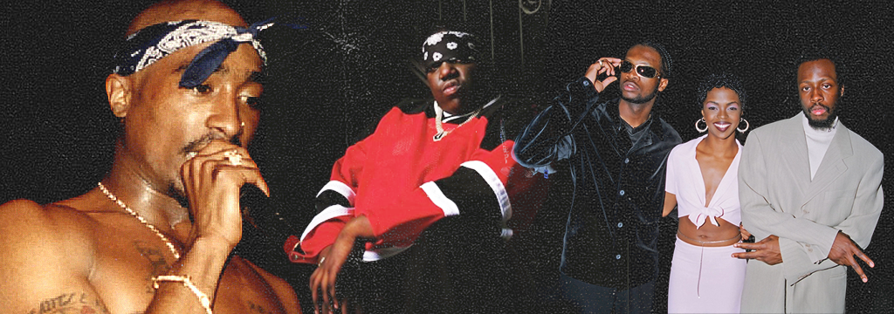

Junkie
A JUNKIE® é uma mídia independente que surgiu da espontânea necessidade de criar, comunicar e abastecer a comunidade artística, underground e criativa no Brasil. Revolucionando em estética, conceito e linha editorial, em apenas um ano, essa assinatura garantiu a construção de uma grande audiência fiel, engajada e comprometida a acompanhar todos os conteúdos e ideias propostas. Com forte presença no cenário artístico brasileiro, a JUNKIE® segue criando uma boa relação com os maiores nomes da cena, tendo oportunidades de produção de conteúdos exclusivos com os principais players do mercado musical, artístico e criativo do país. Nesse pequeno período de atuação, a marca já conseguiu atingir grandes números e segue garantindo um engajamento acima da média, superando grandes mídias tradicionais e consolidadas, sem abdicar do seu conceito único criado desde a sua primeira manifestação.
